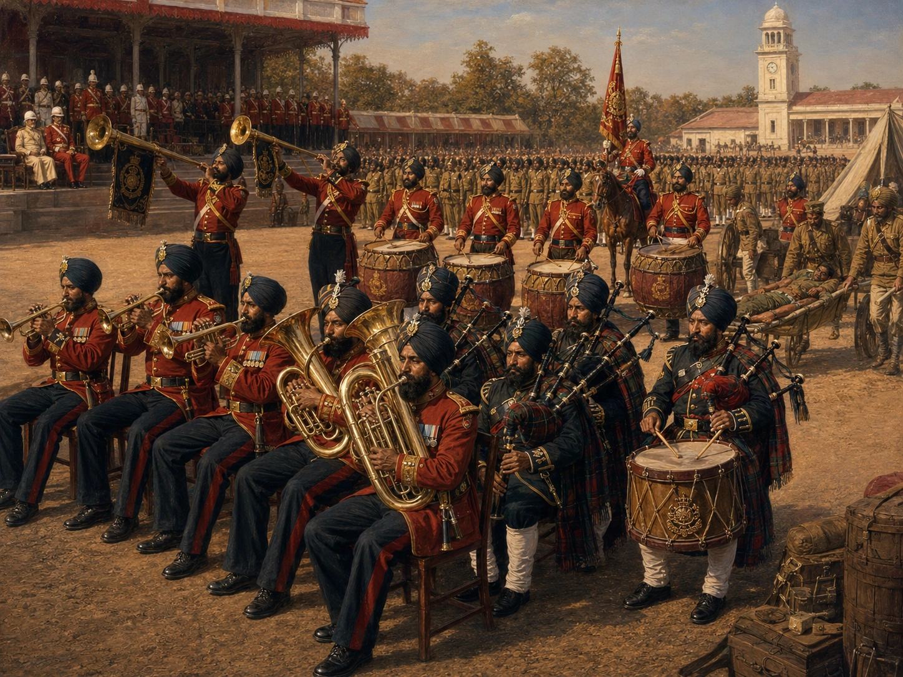

युद्ध ड्रम से सैन्य बैंड तक


शीर्षक: From War Drums to Military Bands
श्रेणी: From War Drums to Military Bands
कलाकार: सिख रेजिमेंटal Centre
वर्ष: ऐतिहासिक
श्रेणी: From War Drums to Military Bands
कलाकार: सिख रेजिमेंटal Centre
वर्ष: ऐतिहासिक
युद्ध ड्रम से सैन्य बैंड तक
सिख सेनाएँ पारंपरिक रूप से निगारस, या केटलड्रम, और नर-सिंघा, या हॉर्न पाइप की आवाज़ के साथ आगे बढ़ती थीं। महाराजा रणजीत सिंह ने खालसा सेना में ढोल वादकों और बिगुल वादकों को संगठित करके इस मार्शल प्रथा का विस्तार किया। रेजिमेंटल प्रणाली के तहत, बैंड स्ट्रेचर-वाहक के रूप में फील्ड सेवा पर सक्रिय बटालियनों के साथ जाते थे, जो संगीत को सैन्य कर्तव्य से जोड़ते थे। पहला बड़ा विकास 1862 में हुआ, जब कर्नल सी.सी.जी. रॉस ने XIV फ़िरोज़पुर सिखों के इक्कीस लोगों को पीतल के वाद्ययंत्रों पर प्रशिक्षण के लिए कलकत्ता भेजा। 1888 तक, बटालियन के पास हवलदार दलेर सिंह के नेतृत्व में चौंतीस सदस्यीय ब्रास बैंड था। कर्नल जी.एन. चैनर, विक्टोरिया क्रॉस ने बाद में नॉर्थहेम्पटनशायर पाइपर्स की सहायता से एक अठारह सदस्यीय पाइप बैंड का गठन किया, जो 1885 में वायसराय के साथ भारत आए थे।
सिख सेनाएँ पारंपरिक रूप से निगारस, या केटलड्रम, और नर-सिंघा, या हॉर्न पाइप की आवाज़ के साथ आगे बढ़ती थीं। महाराजा रणजीत सिंह ने खालसा सेना में ढोल वादकों और बिगुल वादकों को संगठित करके इस मार्शल प्रथा का विस्तार किया। रेजिमेंटल प्रणाली के तहत, बैंड स्ट्रेचर-वाहक के रूप में फील्ड सेवा पर सक्रिय बटालियनों के साथ जाते थे, जो संगीत को सैन्य कर्तव्य से जोड़ते थे। पहला बड़ा विकास 1862 में हुआ, जब कर्नल सी.सी.जी. रॉस ने XIV फ़िरोज़पुर सिखों के इक्कीस लोगों को पीतल के वाद्ययंत्रों पर प्रशिक्षण के लिए कलकत्ता भेजा। 1888 तक, बटालियन के पास हवलदार दलेर सिंह के नेतृत्व में चौंतीस सदस्यीय ब्रास बैंड था। कर्नल जी.एन. चैनर, विक्टोरिया क्रॉस ने बाद में नॉर्थहेम्पटनशायर पाइपर्स की सहायता से एक अठारह सदस्यीय पाइप बैंड का गठन किया, जो 1885 में वायसराय के साथ भारत आए थे।

🇬🇧 English
🇮🇳 हिन्दी
ੴ ਪੰਜਾਬੀ
मोबाइल पर खोलें
अपने फोन पर अंग्रेजी, हिंदी या पंजाबी में देखने के लिए इस QR कोड को स्कैन करें।